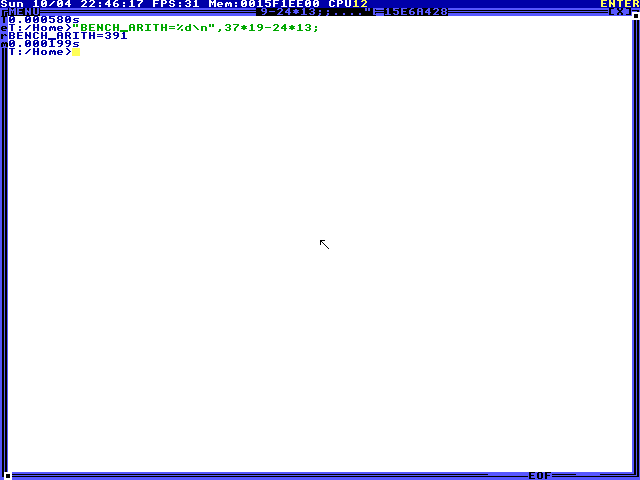
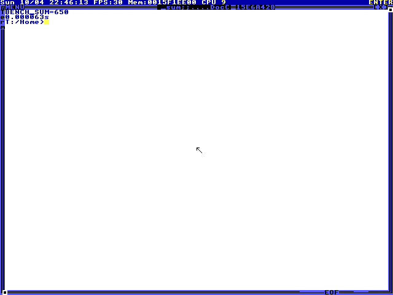
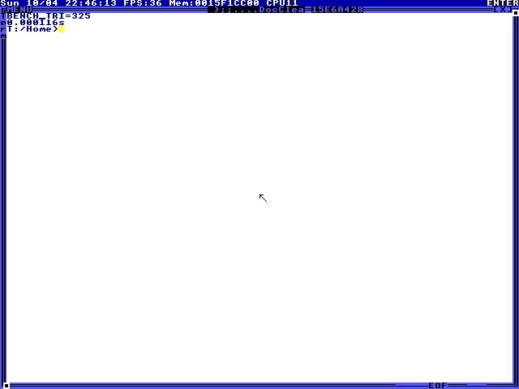
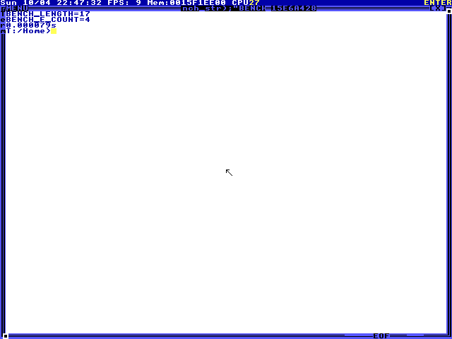
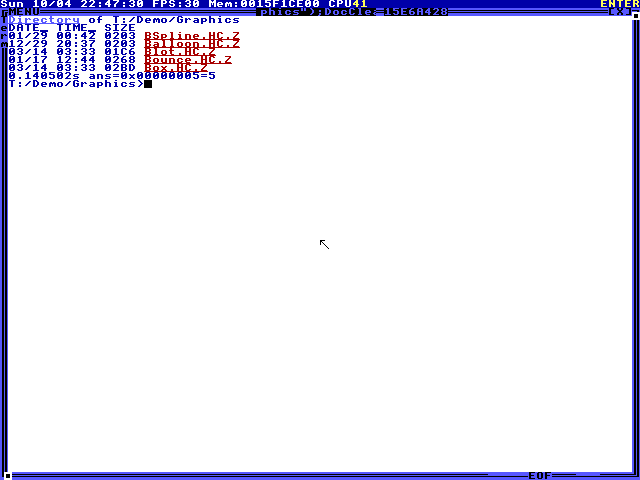
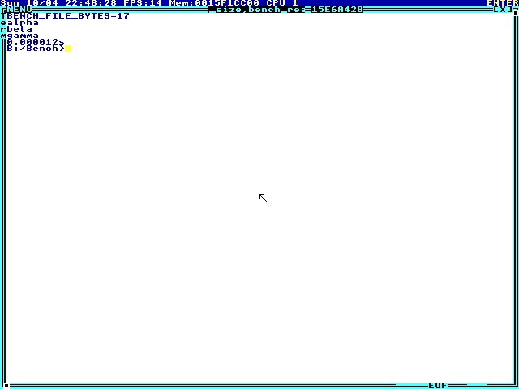
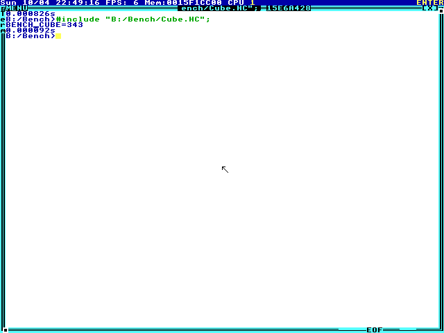
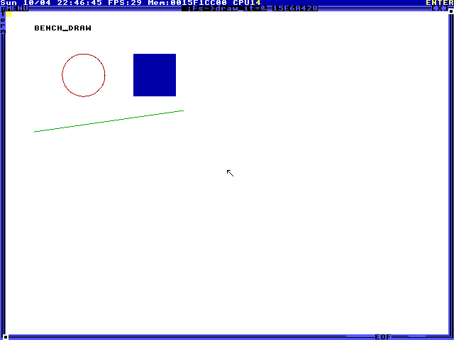

TempleOS CUA report
scripted / scripted-reference
Created 2026-10-04T22:56:26.754171+00:00
6Passed
0Failed
2Needs review
0Grader errors
Execution outcomes: 8 completed.
OCR grades are heuristic visual evidence. Command echo or source text can satisfy a match; guest state is not verified.
Manual tasks require a reviewer. An execution outcome and a grade describe separate facts.
Evaluate an integer expression in HolyC
Task arithmetic
Grade: passed Execution: completed · Steps: 3 · Elapsed: 4.069 s · Score: 1
Required visual text matched. Heuristic visual evidence only: matching text can appear in command echo or source code; guest state is not verified.
input tokens: 0, output tokens: 0, total tokens: 0
- Heuristic visual evidence only: matching text can appear in command echo or source code; guest state is not verified.
- Exact stock TempleOS 8x8 glyph decoding; unknown cells remain U+FFFD.
- grader-ocr.txt
Trajectory (JSONL)

Sum the first twelve squares with a loop
Task sum_of_squares
Grade: passed Execution: completed · Steps: 4 · Elapsed: 8.196 s · Score: 1
Required visual text matched. Heuristic visual evidence only: matching text can appear in command echo or source code; guest state is not verified.
input tokens: 0, output tokens: 0, total tokens: 0
- Heuristic visual evidence only: matching text can appear in command echo or source code; guest state is not verified.
- Exact stock TempleOS 8x8 glyph decoding; unknown cells remain U+FFFD.
- grader-ocr.txt
Trajectory (JSONL)

Define and call a HolyC function
Task triangular_function
Grade: passed Execution: completed · Steps: 4 · Elapsed: 7.767 s · Score: 1
Required visual text matched. Heuristic visual evidence only: matching text can appear in command echo or source code; guest state is not verified.
input tokens: 0, output tokens: 0, total tokens: 0
- Heuristic visual evidence only: matching text can appear in command echo or source code; guest state is not verified.
- Exact stock TempleOS 8x8 glyph decoding; unknown cells remain U+FFFD.
- grader-ocr.txt
Trajectory (JSONL)

Measure a string using TempleOS routines
Task string_statistics
Grade: passed Execution: completed · Steps: 4 · Elapsed: 17.282 s · Score: 1
Required visual text matched. Heuristic visual evidence only: matching text can appear in command echo or source code; guest state is not verified.
input tokens: 0, output tokens: 0, total tokens: 0
- Heuristic visual evidence only: matching text can appear in command echo or source code; guest state is not verified.
- Exact stock TempleOS 8x8 glyph decoding; unknown cells remain U+FFFD.
- grader-ocr.txt
Trajectory (JSONL)

Navigate to the graphics examples
Task directory_navigation
Grade: passed Execution: completed · Steps: 3 · Elapsed: 15.626 s · Score: 1
Required visual text matched. Heuristic visual evidence only: matching text can appear in command echo or source code; guest state is not verified.
input tokens: 0, output tokens: 0, total tokens: 0
- Heuristic visual evidence only: matching text can appear in command echo or source code; guest state is not verified.
- Exact stock TempleOS 8x8 glyph decoding; unknown cells remain U+FFFD.
- grader-ocr.txt
Trajectory (JSONL)

Write and read a file on a RAM drive
Task file_roundtrip
Grade: passed Execution: completed · Steps: 4 · Elapsed: 26.826 s · Score: 1
Required visual text matched. Heuristic visual evidence only: matching text can appear in command echo or source code; guest state is not verified.
input tokens: 0, output tokens: 0, total tokens: 0
- Heuristic visual evidence only: matching text can appear in command echo or source code; guest state is not verified.
- Exact stock TempleOS 8x8 glyph decoding; unknown cells remain U+FFFD.
- grader-ocr.txt
Trajectory (JSONL)

Save and execute a program from the editor
Task editor_program
Grade: needs review Execution: completed · Steps: 11 · Elapsed: 24.101 s · Score: —
Pass only if the recorded trajectory opens B:/Bench/Cube.HC in the editor,
enters a correct BenchCube definition and call, saves via Ctrl+S or an
editor save menu, closes the editor, and executes the saved file. The final
screenshot must show BENCH_CUBE=343 as program output. Confirm that the
source implements n*n*n or equivalent, rather than returning a constant.
Typing a literal success marker, creating the file only through FileWrite,
or claiming completion without visible execution is a failure.
input tokens: 0, output tokens: 0, total tokens: 0
- Manual review required; no automatic success claim was made.
Trajectory (JSONL)

Draw a persistent scene with the graphics API
Task draw_shapes
Grade: needs review Execution: completed · Steps: 4 · Elapsed: 13.752 s · Score: —
Pass if the final screenshot shows the red circular outline, the filled
blue rectangle, the green sloping line, and BENCH_DRAW text, with positions
and dimensions matching the requested client-area coordinates within
about 5 pixels. Review the trajectory to confirm the drawing was created
with TempleOS graphics calls and survives at least one subsequent screen
observation. Printed text naming the shapes, a source listing without a
visible drawing, or a completion claim alone is a failure.
input tokens: 0, output tokens: 0, total tokens: 0
- Manual review required; no automatic success claim was made.
Trajectory (JSONL)
